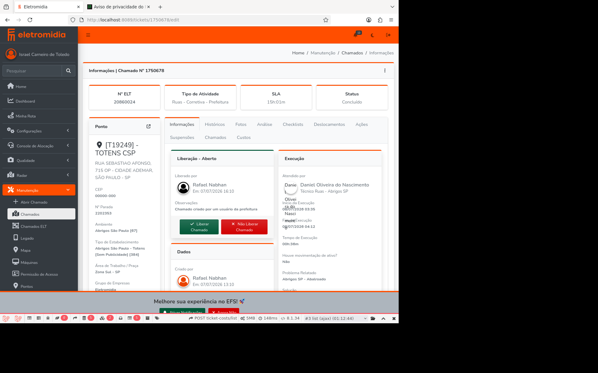
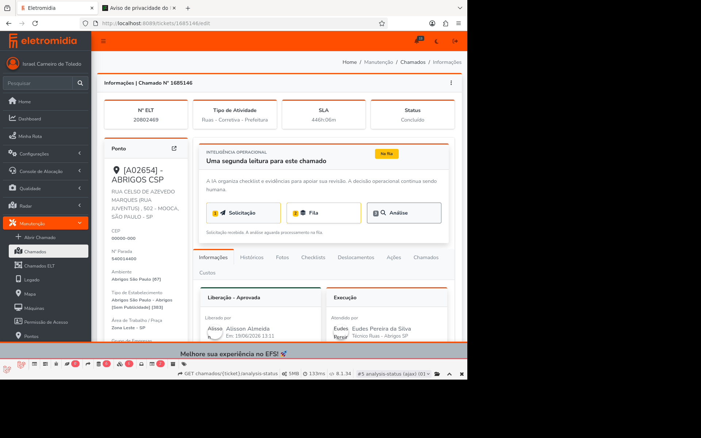

Ticket Analysis
Auditoria de manutenção com IA generativa. O Gemini analisa fotos de Before × After e checklists de chamados concluídos, produzindo leitura operacional inline — apoio à decisão humana, sem automação de fechamento.
itens no glossário do prompt
regras de análise
tickets validados com Gemini live
testes passando (441 assertions)
Interface
Duas telas reais capturadas do fluxo funcional

Ticket 1750678 — Aba "Análise" visível entre Fotos e Checklists. Ticket concluído com dados de execução, localização e técnico.

Ticket 1685146 — Seção "Inteligência Operacional" com fluxo Solicitação → Fila → Análise. Status "Na fila", aguardando processamento.
Como funciona
Do comando batch ao clique único na UI
Janela [5h, 4h), status completed, sistema street, SP. Exclui completed_by_system. Filtra tickets com checklist.
Atômica: run + análises + run_items na mesma transação. UNIQUE(ticket_id) garante uma análise por ticket.
Resolve Before/After, checklist, datas de execução e modelo de abrigo. Monta prompt versionado.
Prompt JSON → resposta estruturada → validação → persistência auditável com ledger.
Fluxo
Batch ou on-demand, o contrato é o mesmo
Seleciona tickets, cria run, reserva análises, dispara jobs
Botão "Gerar Análise IA". Cria run individual, dispara job
CAS (analysis_id, expected_run_id). Resolve evidências, chama Gemini, persiste resultado
Durável. Sobrevive à exclusão da análise. analysis_id sem FK
Confiança, leitura operacional, contexto. Scroll sync com checklist
Manual, apenas failed/dispatch_failed. Dry-run promovível a live
Contrato técnico
| Camada | Decisão |
|---|---|
| Seleção | Janela [5h,4h), status completed, sistema street, SP. Filtra answers.filepath |
| Reserva | Atômica: run + análises + run_items. UNIQUE(ticket_id) |
| CAS | Job recebe (analysis_id, expected_run_id). Processa se run_id bate E status é queued |
| Ledger | Durável, analysis_id sem FK. Status: completed/failed |
| Prompt | JSON versionado: 23 itens glossário + 9 regras + schema output |
| Default | analysis_mode = live. Dry-run apenas override explícito |
| .env.example | Idêntico a origin/main — sem flags de feature |
Validação Gemini Live
4 chamados reais processados com sucesso
| Ticket | Tipo | Confiança | Status |
|---|---|---|---|
| 1750678 | Totens CSP | 1.00 | completed_live |
| 1708721 | Abrigos CSP | 0.95 | completed_live |
| 1736168 | Abrigos CSP | 0.95 | completed_live |
| 1753818 | On-demand | 1.00 | completed_live |
Prompt — Glossário
23 itens cobrindo preventiva e corretiva para Abrigo e Totem
Pichação, Pintura Desgastada, Cobertura Suja, Caixa Aterramento, Calçada Suja, Fiação Exposta, Itinerário, Pictogramas
Estrutura Abalroada, Banco Quebrado, Vidros, Ferrugem Severa, Problema Elétrico, Componente Ausente, Podotátil, Supressão, Obras
Pichação, Estrutura Abalroada, Calçada/Podotátil, Componente Ausente
Modelos de Abrigo (SP)
14 modelos com descrições visuais validadas, usadas no prompt
Robusto, volumoso, linhas retas marcadas. Cobertura ampla.
Mais delgado, maior transparência, perfis finos.
Assimétrico, planos e volumes dinâmicos.
Linhas limpas, superfícies integradas, contemporâneo.
Estrutura metálica aparente, desenho preciso.
Simples, ortogonal, discreto.
Arquitetônico moderno, cobertura expressiva.
Presença urbana marcante, volume expressivo.
Vertical, estreito, acabamento marrom.
26 commits · 97 testes PASS · 441 assertions · Revisão adversarial aprovada